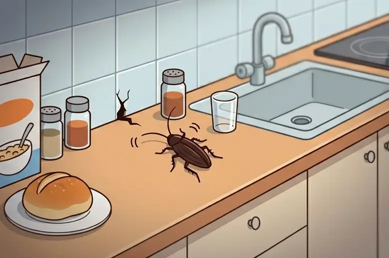
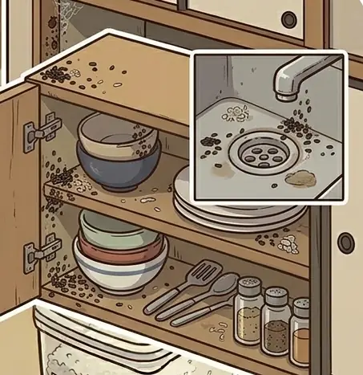
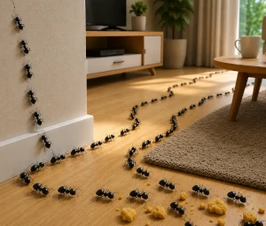
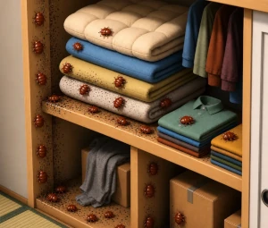

POINT 01
自社集客だから安い
自社集客であるため、他社よりも安価にご提供いたします。



キッチンや浴室でゴキブリを見かけた
食器棚やシンクに糞や卵がある
壁や床の隙間にアリの行列ができている
天井裏や押し入れにトコジラミが住みついている※詳しくはお電話等でご相談ください。
衛生
ゴキブリやダニによる食中毒・アレルギーのリスク。
拡散
トコジラミの爆発的繁殖や荷物・衣類への付着による被害拡大。
生活
不快感やストレス、二次的な害虫発生の連鎖。
POINT 01
自社集客であるため、他社よりも安価にご提供いたします。
POINT 02
受付後、最短スケジュールで現地確認。被害拡大を防ぐため、初動を重視しています。
POINT 03
施工内容により異なりますが、最大半永久保証をご提供いたします。
※害虫の種類・被害範囲・建物条件により異なります。現地調査後に明朗なお見積りをご提示します。
実際にどんな現場を対応したか、具体的な事例をご紹介します。
お住まいやお困りごとに近いケースもございます。
キッチンと洗面所でゴキブリを頻繁に確認。子どもがいるため…
現地調査で排水管周辺と配管スペースを特定。薬剤処理に加え…
作業後2週間の確認で目視ゼロ。再発防止の清掃・保管方法も…
お客様コメント夜中に見かけて不安でしたが、説明が丁寧で安心してお任せできました。作業後は一匹も見ていません。
軒下に直径20cmほどの巣を発見。小さな子どもがおり、当…
防護装備で巣を除去し、巣跡周辺を薬剤処理。近隣への声かけ…
巣の完全除去。1か月後の再確認でも新たな巣は確認されず。
お客様コメント電話ですぐに日程が決まり、当日中に来ていただけました。近所への配慮もありがたかったです。
寝室の壁際でトコジラミの活動を確認。他社で一時的に減った…
全室の目視調査と土壌サンプル確認。侵入経路の塞ぎ、土壌処…
作業後1か月・3か月のフォローで再発なし。管理組合への報…
お客様コメント根本から見てもらえたのがよかったです。再発の不安がなくなり、やっと眠れるようになりました。
客席付近でダニを確認。営業を止めずに対応したいが、衛生面…
閉店後の深夜帯に薬剤処理と清掃指導。客席・厨房・倉庫を区…
翌営業日から通常営業。2週間後の点検でも被害なし。定期点…
お客様コメント営業に支障が出ないよう調整してくれ、スタッフ全員が安心しました。アドバイスも実用的でした。
リビングから庭へ続くアリの行列。ペット（猫）がいるため薬…
侵入経路の特定後、ペットに配慮した低毒性薬剤で処理。巣の…
作業翌日から行列は消失。1週間後の再訪でも再発なし。
お客様コメント猫への影響が心配でしたが、事前に丁寧に説明いただき安心できました。女性スタッフ対応も助かりました。
ベランダの雨どい付近にハチの巣。洗濯物を干せず、管理会社…
高所作業車なしで対応可能な範囲で巣を除去。ベランダ下方向…
巣除去完了。共用部への影響なく作業。管理会社へ完了報告書…
お客様コメントマンションなので手続きが心配でしたが、管理会社とのやり取りもサポートいただき助かりました。
ベランダと玄関先でムカデを複数確認。高齢の母と同居のため…
発生源の目視調査、ベランダ・共用廊下の処理、侵入防止テー…
作業後2週間でムカデの目撃なし。季節変化に合わせた再発予…
お客様コメント母の足元が心配でしたが、作業後は安心してベランダに出られるようになりました。説明もわかりやすかったです。
夜の物音が不安で連絡しました。見積りの説明が丁寧で、駆除後も穴の塞ぎまでやってくださって安心しました。作業員の方も清潔感があり、女性一人でも安心してお任せできました。再発防止のアドバイスまでいただき、本当に助かりました。
軒下にできた大きなスズメバチの巣。小さい子供がいるので急いで対応してもらいました。当日中に来ていただき、完全に除去。周囲への配慮も完璧で、ご近所にも迷惑をかけることなく作業完了。プロの技術力に感動です。
寝室にトコジラミが発生し、夜も眠れない状況でした。他社では根本解決せず困っていましたが、レスキュー侍さんは違いました。徹底的な調査から始まり、侵入経路まで完璧に塞いでいただき、その後一匹も出ていません。料金も明朗で安心でした。
店舗にダニが発生し、お客様にご迷惑をおかけする前に緊急対応をお願いしました。深夜営業後の作業にも関わらず、迅速に対応いただき翌日から通常営業できました。衛生管理のアドバイスも的確で、今では定期メンテナンスもお願いしています。
ベランダのムカデに困っていました。マンション管理組合との調整も含め、丁寧に対応していただきました。その後ムカデは一匹もいなくなりました。
一人暮らしでアリの大量発生に困り、女性スタッフでの対応をお願いしました。丁寧な事前説明と、女性ならではの細やかな配慮で安心してお任せできました。ペットの猫への影響も最小限に抑えた薬剤選択をしていただき、本当に感謝しています。

電話・Webより24時間受付（折り返しは営業時間内）。

被害状況と侵入経路を確認し、ご契約内容を明示します。

許可・方法は法令と現場状況に沿って安全に実施します。

作業報告後に確認。内容にご納得いただいた上で清算します。
現金のほか、各種クレジットカード、電子マネー、QRコード決済に対応しております。
作業完了後、その場でお支払いが可能です。

※詳細はお見積り時にスタッフへご確認ください。
※「VISA, Mastercard」「PayPay」等、幅広く対応しています。
首都圏を中心に迅速対応。主要エリアは最速約30分でお伺いできる場合があります（曜日・距離により変動）。
新宿区、足立区、江戸川区、練馬区、世田谷区、杉並区、大田区、板橋区、葛飾区、江東区、品川区、北区、中野区、豊島区、目黒区、墨田区、文京区、港区、渋谷区、荒川区、台東区、中央区、千代田区、八王子市、町田市、府中市、調布市、西東京市、小平市、三鷹市、日野市、立川市、ほか都内全域
横浜市（鶴見区・神奈川区・西区・中区・南区・保土ケ谷区・磯子区・金沢区・港北区・戸塚区・港南区・旭区・緑区・瀬谷区・栄区・泉区・青葉区・都筑区）、川崎市、相模原市、藤沢市、横須賀市、平塚市、茅ヶ崎市、大和市、厚木市、座間市、海老名市、伊勢原市、綾瀬市、ほか県内全域
さいたま市、川口市、川越市、越谷市、所沢市、草加市、春日部市、上尾市、熊谷市、新座市、久喜市、狭山市、入間市、深谷市、三郷市、朝霞市、戸田市、鴻巣市、加須市、富士見市、ふじみ野市、ほか県内全域
千葉市（中央区・花見川区・稲毛区・若葉区・緑区・美浜区）、船橋市、松戸市、市川市、柏市、市原市、八千代市、佐倉市、習志野市、浦安市、流山市、野田市、我孫子市、木更津市、成田市、鎌ケ谷市、ほか県内全域
はい。現地調査・お見積りは0円です。作業内容と料金を事前に明示し、ご納得いただいてから施工します。
はい。お電話・Web受付後、最短で当日お伺いできる場合があります（エリア・日程により変動）。
東京都・神奈川県・埼玉県・千葉県を中心に首都圏で対応しています。対応エリアの詳細はこちら。
害虫の種類・被害範囲により異なりますが、施工は3,000円〜行っています。料金の目安・他社比較もご覧ください。
はい。ペットの種類や体調に配慮した薬剤選定が可能です。事前にご相談ください。